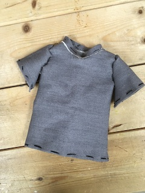
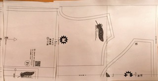
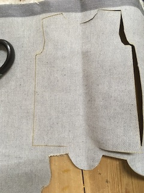
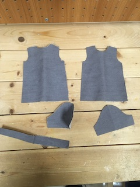
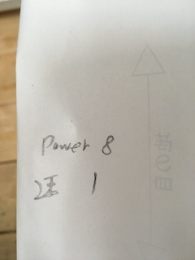

11月2日開催の押切さんのワークショップに参加してみて
参加者
服作りができる、初めてデジタルファブリケーションに触れる人
デジタルファブリケーションを普段から使用しており、服作りとのコラボに関心がある人
感想
普段違う分野の専門の人が、デジタルファブリケーションを使いたいために新しくパソコンを学習するきっかけになる。
ノウハウを伝達するネットワークは服とレーザーカッター の分野ではまだ普及していない。
ワークショップはチャレンジするのにいいきっかけになる。
見学だけする日があればファブラボに入りやすくなるのではないか。鎌倉のような月曜の大掃除。
参加者同士の新しい出会いの場となり、面白い
デザインシンキングのワークショップに参加した感想
デザイン思考は"人"にフォーカス。
1.1人でやらず、他者との議論に時間をとること！
2.洞察、発見、常に旅行者目線が大切。そういう発見は独自の強みとなり、競争力ともなりうる。イノベーションの種
3.未完のもの他者に見せるのをいとわない。どんどん出して、感想もらってブラッシュアップすべし。
動画をそのまま載せてしまうと重く、機能しなくなるので注意
必ずYouTubeのリンクを貼るべし(アップロードをするのにも重い)
ギットの容量を確認するには ＝＞ du -sh .git/objects
ホームページのソースを確認するにはMACの場合 ⌘command＋optionキー＋U
革新的な服は作れないか模索するため、まずは普通の服を作ってみた。
http://dr-cos.com/
こちらのサイトにて、型紙のダウンロード
完成品の写真

感想
型紙のデータがイラレなら、レーザーで半分に折って切れるのではないか、彫刻で縫代も作れるのではないか。
彫刻でやるより手軽な方法があるらしい！
データを読み込んだ時点で、スキャンする環境が悪かったのか、サイズがばらばらになる。
折りたたんで切るのは下に跡がつくので、ハサミできる感じになる。




クリエイティブマインドセットの本を読み直し。
大切なこと…
インタビューテクニックp.143,144
共感する！
・見せてもらう
人々の自宅、職場、行きつけの場所を訪れ、普段使っているもの、スペース、道具を見せてもらう。
写真やメモで残してみよう。
・描いてもらう
相手の体験を視覚的に表現してもらおう。この方法は思い込みを暴くのにうってつけだ。
また相手がどのように考え、行動に優先順をつけてるか理解できる。
・5回のなぜ
思い込みを深く掘り下げて、根底にある理由を探ろう。
・声に出して考える
具体的な作業を行ってもらう場合、考えを声に出してもらい、認識の過程を理解しようとする
p.301-304
サーティーサークル30この円
演習(ソース)